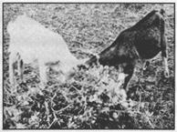

There are many ways to grow more food on less land and you've probably already heard about or tried succession planting, double cropping, and other intensive gardening tricks. "But growing is only half the story," says Eugene A. Engeldinger, of Strum, Wisconsin. "If you want your garden to really pay off, you've got to use what it produces more than once!"
My family loves peas and we've planted several varieties of the vegetable over the years. Regardless of the kind we raised, however, our homegrown crop always seemed to have the same drawback: After all the work of planting, cultivating, mulching, harvesting, and shelling . . . the few pints of (admittedly tasty) peas we finally set on the table generally struck us as a small return on our investment. Oh sure, we got a little additional satisfaction out of adding the hulled pods to the compost pile . . . but not enough to make us feel that we were coming out even on the deal.
We tried to tip the scales in our favor for a couple of years by planting only peas with edible pods. "Hey! This is the answer," we told ourselves. "Just look how much more we have to set on the table when we can eat pods and all." "This is not the answer," we immediately replied, "because we simply don't like edible pod peas as much as we like the regular kind. "
And so we went back to our first love . . . but this time, thanks to our experience with edible pod peas, we had a little trick up our sleeve. "Maybe we don't want to eat pea pods," we thought, "but there's a strong possibility that some of the other inhabitants of the farm will. And if we can get that kind of mileage out of the crop, it'll be worth growing the kind of peas we really like after all."
We had just added rabbits to our homestead inventory of livestock, so we started our experiments with them. Surprise! Not only did the animals relish our "useless" pea pods (and other vegetable "wastes"), but the culls from the garden also added variety to the bunnies' diet, substantially cut our bills for rabbit feed, and became a far more desirable addition to the compost pile once they'd been transformed into rabbit manure than they'd ever been as garden scraps.
We've since learned that we can work the same kind of mutually profitable exchange with our ducks, chickens, calves, sheep . . . in fact, all the animals in our menagerie. Old-time farmers, I'm sure, have known this obvious truth all along . . . but that still doesn't keep the idea from being a worthwhile revelation to beginning back-to-the-landers.
Once we'd had our eyes opened to the possibilities, we began looking for even more ways to make our hulled-out pea pods pay their way on our little farm. And, as luck would have it, we immediately turned up a novel use for the shells that had probably been right under our noses all along: Pea Pod Wine.
We've now collected a number of recipes for this treat, but we think that the one which follows is the best of all . . . it produces a fine flavored drink that should please the palate of almost any connoisseur of homemade wine:
Wash two and a half pounds of empty pea pods and place them in a large cooking pot. Then cut up one grapefruit and two oranges-rinds and all-and add them to the container. At the same time, boil five quarts of water in a separate vessel . . . and then immediately pour it over the pods and chunks of citrus fruit. Allow the mixture to stand overnight.
Bring the contents of your cooking pot to a boil the next day and strain the solution through a piece of cheesecloth, muslin, or an old kitchen towel into a fermentation vessel. (Our local bakery purchases its pastry filling in five-gallon plastic containers and-once they're emptied-is happy to sell the pails to us for 75 cents each. A clean, new plastic garbage can or one of those wonderful old glazed-on-the-inside ceramic crocks that every farmhouse used to have in its cellar is also ideal for the job.) Promptly add four pounds of sugar to the still-hot liquid and stir the solution until the sweetening is completely dissolved. Then, after the mixture has cooled to room temperature, sprinkle one ounce of dry wine yeast across its surface.
Cover the crock with a clean cloth and let it sit at room temperature for two weeks. Then, with a short length of sterilized plastic hose, siphon the liquid (but not the bottom inch or so of dregs) into a sterilized gallon jug. The mouth of the jug is next covered with a piece of wax paper or plastic wrap which is held in place with a rubber band just tightly enough to keep vagrant bacteria and yeast out . . . but not so tightly that fermenting gas in the container can't escape. Store the jug in a warm (but not hot), out-of-the-way place until its contents have quit "working" and all fermentation has ceased.
This fermentation may take several months. Be patient. Only when the wine is perfectly clear and contains no more bubbles, should it finally be siphoned into sterilized old wine or whiskey bottles and sealed with sterile new corks. (Do not allow the dregs which have former; in the gallon jug to siphon into the bottles as they're filled.)
Label your bottles of wine and store them on their sides in a dark cellar. Their corks, if properly set, will not dry out and little or no seepage will take place. Like many other good things, this pea pod wine improves with age. We generally make the beverage in threegallon batches. If you prefer to do the same, just triple all the ingredients given above.
Don't try to feed the wet solids (pods, pieces of citrus, etc.), left over from the winemaking, to your rabbits. Your pigs and chickens, however, will be most pleased to dispose of them. And if your homestead has no porcine or poultry in habitants, add the leftovers to your compost pile or bury them between unmulched rows in the garden. (Just don't throw them out on top of the soil someplace where they can attract flies and other vermin.)
If you've followed me this far, you probably won't be surprised at the nextand ultimate-step we've taken in our efforts to gain 100% utilization of the peas we grow: Yep! We now make the old vines from the plants work for us too.
As soon as we've harvested all the peas we want or can get from our plants, we pull the vines and feed them to the rabbits, chickens, or other livestock. Last summer, however, we had so many greens to give to our animals at the time the vines stopped bearing, that we tried something else: We turned what was left of the pea plants into hay.
Actually, this'wasn't difficult to do . . . even by hand. We simply placed the vines in small, loose piles and turned them somewhat carefully (to keep all the leaves from falling off) every couple of days for a week. The thoroughly dried plants were then hauled to the barn, stored, and fed to our livestock during the following winter.
True, our pea vine hay is much coarser and not as green as choice alfalfa . . . but the denizens of the barn seem to appreciate it just the same. They like it so much, in fact, that we now have a brandnew problem on our hands: In the past we didn't know what to do with all the old pea vines from the garden . . . and now we never have enough of the vines on hand to satisfy everyone who wants them!
Of course, if you don't have a barnful of livestock the way we do, there are still other things you can do with old pea vines. You can, for instance, plant your peas near the space you've reserved in the vegetable patch for cucumbers, squash, and/or melons. Then, when the peas are finished for the season (usually by mid-July), you can take your choice: [1] pull the vines up, run 'em through a shredder, add 'em to the compost pile, and let the cucumbers, squash, and/or melons sprawl into the vacated pea rows . . . or [2] just leave the old vines where they are, chop 'em up a little so they won't become entangled in the tines of your rototiller later in the fall, and allow the cucumber, squash, and/or melon plants to spread out right over this natural mulch.
To sum up then: Many gardeners find it worthwhile to raise their own fresh peas "just for the eating of the vegetable itself". We don't. Now that we've learned to get additional value from the pods and vines of the plant, however, fresh homegrown garden peas are back on our table to stay.
|
 |
|
|